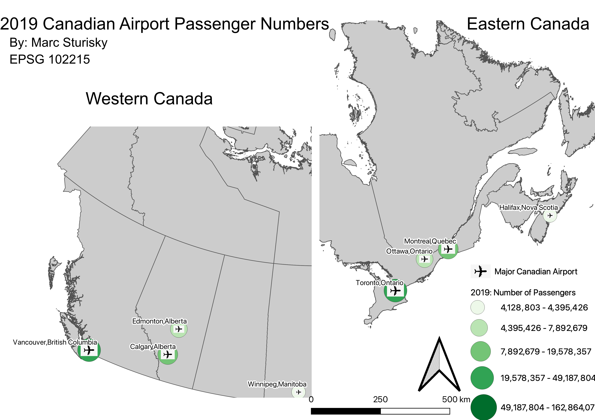
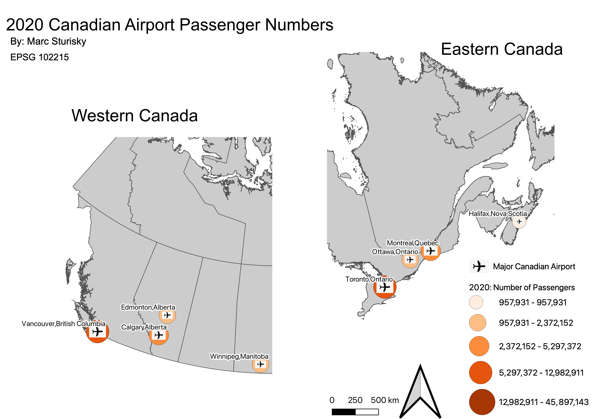

Homework 7
The data depicted below are maps featuring Canada's 8 busiest airports (which were the same in 2019 and 2020). It is most notable to look at the table because there is just a huge drop in passengers from pre-covid to the covid era. I became interested in the airline industry at a young age and so I looked for a way to tie that in to this project. I'm working for an airline this summer and hope to make it my long-term career. I split up Eastern and Western Canada to make it easier to see my labels because there is such a huge distance between Vancouver and Halifax.

Airports had high levels of passengers in these pre-covid times. Toronto and Vancouver had the most passengers with Halifax and Winnipeg having the least. Natural breaks was used for the table. Size and color both represent airports having more passengers (by points being darker in shade and larger)

COVID-19 dramatically caused a reduction of flights in 2020, and it is extremely apparent just by looking at the table and seeing the range of passenger numbers. Notably, Winnipeg moved out of the smallest class with Halifax into the second to smallest class. The 300,000 difference in passengers between the two airports is the highest it has been in recent years. Even more interestingly was that it took a pandemic for Calgary to pass Montreal for third busiest airport in Canada.
Data used for this project:
Link to cleaned csv dataset on Github